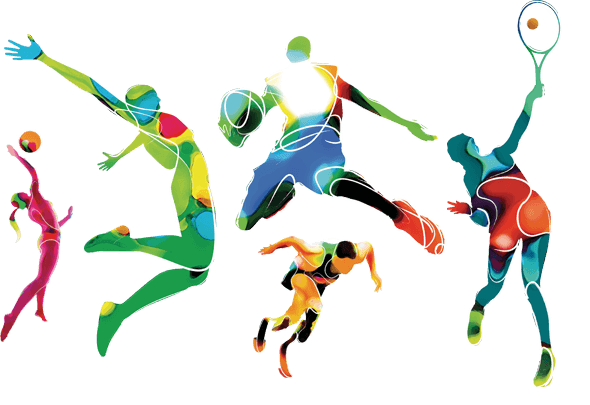

Значення спорту в нашому житті
Спорт має дивовижні властивості. Він об’єднує людей, знайомить їх між собою, спорт зміцнює здоров’я, характер і навіть розумові здібності людей, які ним займаються, розвиває в них такі навички як швидкість, спритність, реакція, координація, витривалість, терпіння і сила. Спорт робить людей більш стійкими до негативних факторів зовнішнього середовища. Він часто приносить людям масу позитивних емоцій.
Наприклад, при перемозі улюбленої команди або при досягненні людиною якогось результату в ньому.
А яку роль у вашому житті відіграє спорт? Є люди, які вважають його нераціональною витратою часу, інші люди не бачать свого життя без спорту , і їх, на велике щастя, більше ніж перших.
Причому кожен з них може мати різне ставлення до спорту: хтось вважає за краще дивитися його по телевізору, хтось віддає перевагу просто займатися яким-небудь видом спорту або загально-фізичною підготовкою, ну а для когось спорт – це засіб існування. Серед останніх можуть бути діючі спортсмени, тренери, лікарі, директори різних спортивних товариств, піклувальники спорту та ін. І кожен з них вносить свій внесок у розвиток спорту на нашій планеті.
Хотілося б зазначити, що найбільш для людини корисним, так як і для суспільства є саме заняття спортом. І багато в чому це зумовлено тим, що люди, не дивлячись на успіхи в науці, деградують самі по собі, звичайно, при цьому в певних якостях воно ростуть. Люди намагаються спростити собі життя. У зв’язку з розвитком техніки фізична праця для людини перестає мати значення. Люди в порівнянні зі своїми далекими предками стають більш немічними і тут ще до всього іншого на них дуже погано можуть впливати такі спокуси, як алкоголь, тютюн і наркотики. І вкрай не бажано піддаватися цим спокусам. І в цьому чудову роль для людини може відіграти заняття спортом, тому що він прямо протилежний цим злим факторам і спокійно може служити альтернативою, яка не дасть людині стати алкоголіком, курцем і наркоманом.

Про мене
Я Романюк Дмитро - адмінастратор та творець цього сайту. Спортом займаюсь все житття. Футбол, волейбол, теніс - мої улюблені види. Сподіваюсь, ві знайдете для себе щось цікаве на цій платформі. Для зв'язку +380968274494